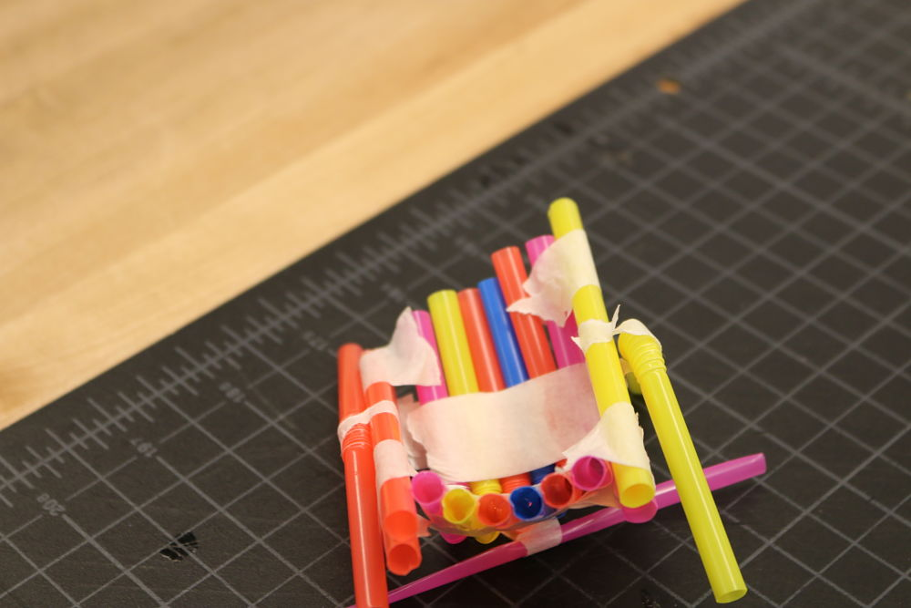
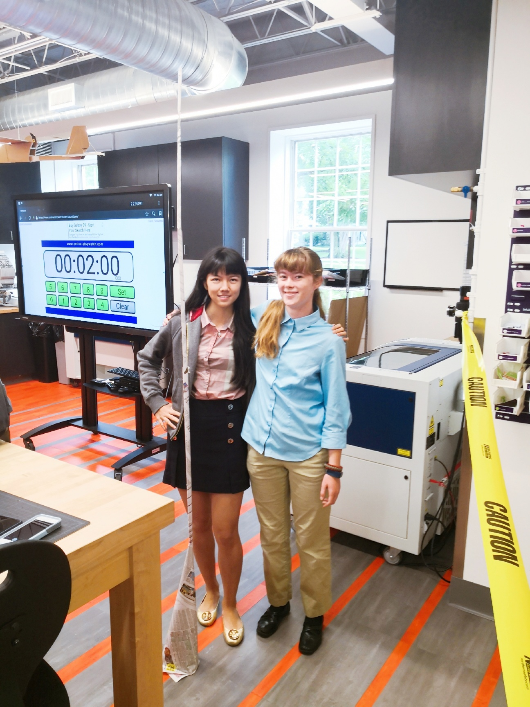

In this challenge, we were trying to use straws and tapes to make contraption to hold golf which dropped from six feet high. The contraption we made need to prevent golf ball from touching the ground. This seemed really easy at beginning since we were given 12 straws. However, we were acutally only allowed to let 3 straws touch the ground. We also needed to make sure that our contraption would hold the dropped golf ball stably. In my group, we bended and cutted straws to make a small basket. Then we sticked three half-cutted straw on the bottom of the basket to make sure that there were only three straws touched ground and at the same time the basket is stable. During the testing, our contraption almost held the golf ball successfully, but the contraption itself was stil not stable enough. As such we failed, but I still really enjoy the process of designing and making this small contraption with my classmates.

In this second challenge, we were trying to use newspaper to make a Skyscraper as high as possible. My group member and I made a really practical design. We used newspaper to make a cone shape as the bottom of the skyscraper. The cone shape newspaper just looks like a Christmas tree which is unbelievably stable. With this stable basis of our skycraper, we begined to build it up. We rolled the other newspaper to long and slim cylinders, connecting those cylinders by tapes and putting them on the vertext of the cone. Finally our group had the highest skyscraper in our class!


